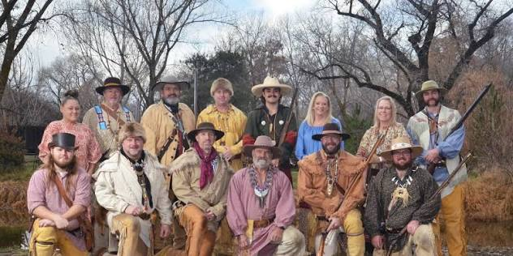
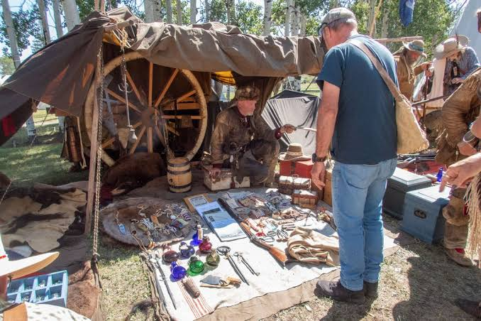
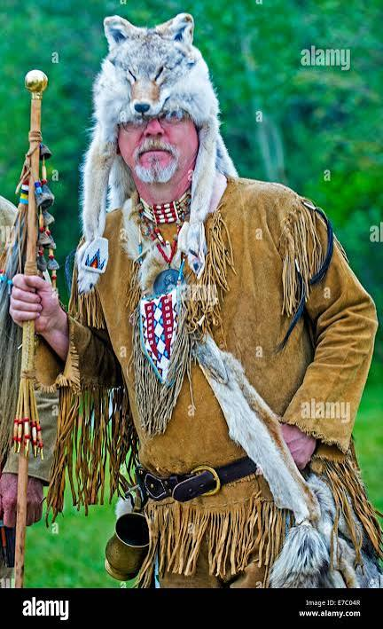
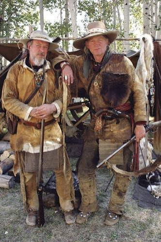
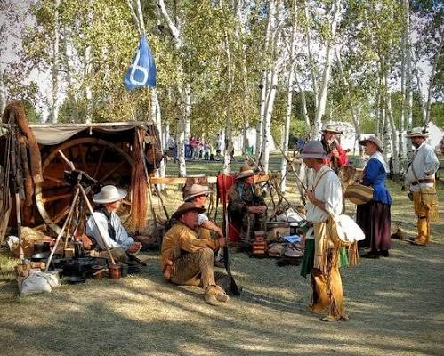
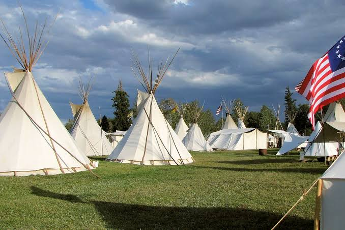

Ft. Bridger Rendezvous
The Fort Bridger Rendezvous is a massive annual living-history event held over Labor Day weekend (September 47, 2026) at the Fort Bridger State Historic Site in southwest Wyoming. It recreates the 1825‐1840 fur trade era with primitive camps, trading posts, and historical competitions.
- Event Highlights
- Reenactments & Living History: Participants wear strict pre-1840s period clothing, living in authentic tipis and lodges.
- Contests & Competitions: Black powder rifle shoots, archery, knife and tomahawk throwing, and a frying pan toss.
- Cultural Presentations: Native American dancing and drumming, plus frontier craft and survival demonstrations.
- Family Activities: Children's games and the famous candy cannon shoot.
- YouTube video of Ft. Bridger Rendezvous
- Visitor Information
- Dates: September 4th to September 7th, 2026 (Gates open 8:00 AM to 6:00 PM).
- Admission $5.00 for visitors 12 and older; children 11 and under are free. Head,to,toe pre,1840s attire also enters free.





